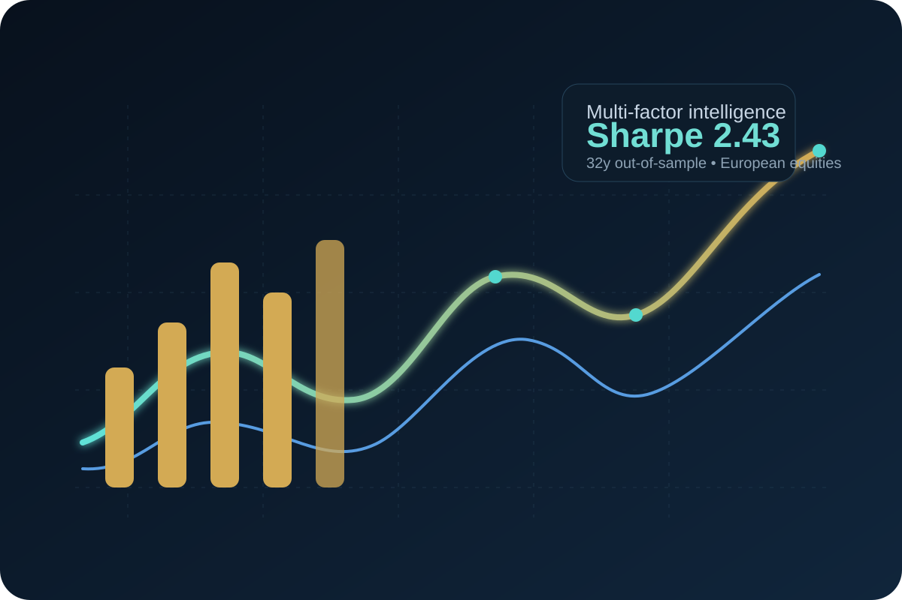
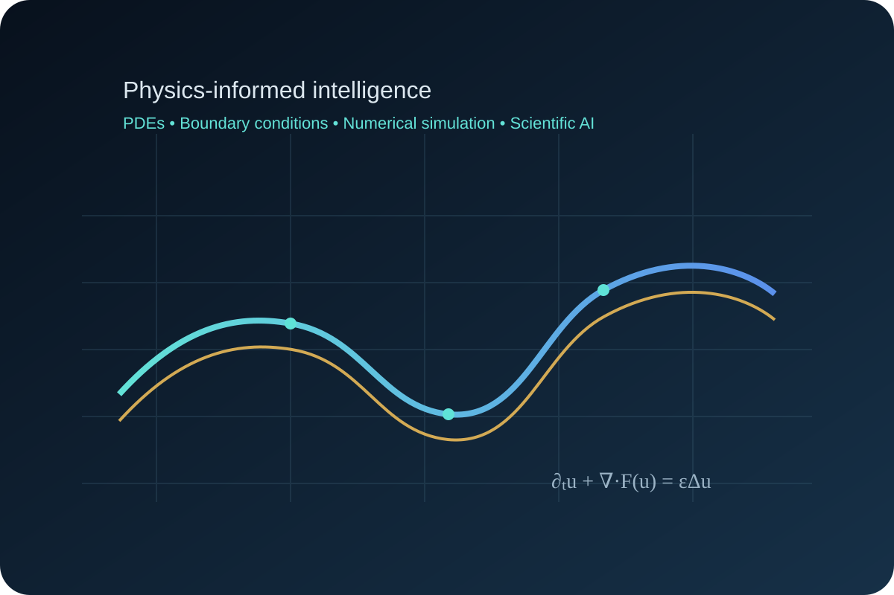

MATHEMATICS · ADVANCED AI · QUANTITATIVE TECHNOLOGY
La rigueur des mathématiques.
L’art de l’innovation.
CerebraQuant Solutions transforme l’excellence mathématique en technologies quantitatives pour la finance, en solutions d’intelligence artificielle avancée et en formations de haut niveau fondées sur la pratique.Notre expertise associe modélisation mathématique, méthodes statistiques, ingénierie algorithmique, Machine Learning avancé, Deep Learning et validation scientifique rigoureuse.
Trois pôles.
Une même exigence.
Des solutions complémentaires, reliées par une même culture de la modélisation, du code et de la validation scientifique.
Quantitative
Technologies
Allocation, couverture et ingénierie de modèles quantitatifs. Licence, acquisition ou développement sur mesure.
Découvrir les technologies ↗R&D &
Consulting
Finance quantitative, IA, équations aux dérivées partielles, calcul scientifique et optimisation mathématique.
Explorer nos expertises ↗CerebraQuant
Academy
Masterclasses et programmes avancés, dispensés en ligne et en direct, pour les particuliers et les entreprises.
Découvrir l'Academy ↗De l'hypothèse
à la preuve numérique.
Une méthode de travail fondée sur la compréhension du problème, les hypothèses explicites et la validation reproductible.
Notre démarche scientifique ↗La science,
rendue tangible.
Des axes concrets pour découvrir ce que nous concevons, étudions et enseignons.

Portfolio & Hedging Systems
Des technologies quantitatives construites autour du risque, de la robustesse, du benchmark et de l'intégration opérationnelle.
Explorer ↗
Scientific AI & Publications
Travaux sur le Scientific Machine Learning, les problèmes hyperboliques non linéaires et les méthodes de validation mathématique.
Voir la recherche ↗
Apprendre par la pratique
Supports rigoureux, programmation Python et ateliers guidés en direct.
Découvrir l'Academy ↗Un parcours scientifique
et industriel.
Khalil Haddaoui, PhD — Docteur en mathématiques appliquées, quant researcher, développeur d'algorithmes et enseignant. Son profil se situe à l'intersection de la finance quantitative, de l'intelligence artificielle, du calcul scientifique et de la transmission de savoirs avancés.
Découvrir le fondateur ↗Vos défis méritent
une approche rigoureuse.
Technologie quantitative, projet de R&D ou formation avancée : identifions ensemble le bon point de départ.
Choisir mon interlocuteur ↗